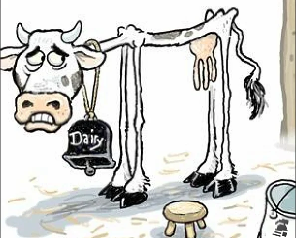

A vaca leiteira é um dos animais mais importantes para cooperativas agrícolas. Ela é criada principalmente para produçaão de leite, que pode ser usado in natura ou pode ser transformado em queijo ou outros derivados, como manteiga e iorgute
Características
Uma vaca leiteira adulta pode produzir varios litros de leite por dia. Ela precisa de uma boa alimentação, água limpa e cuidados veterinários regulares para manter a saúde e a produção
Ficha produzida para aula de programação web.